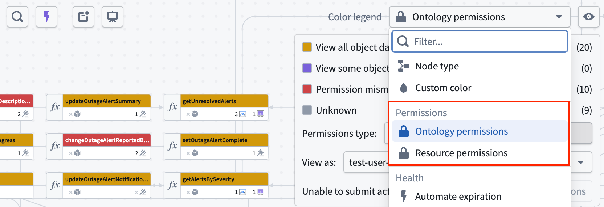
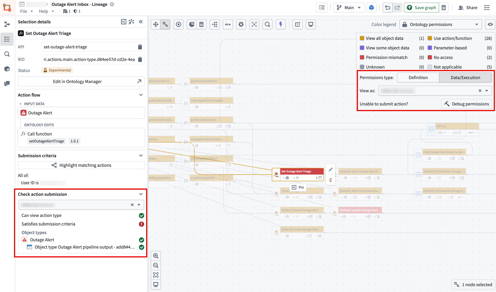
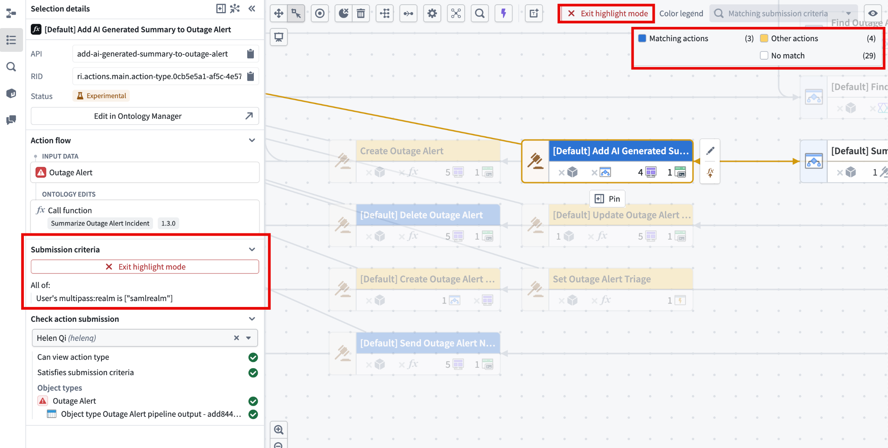
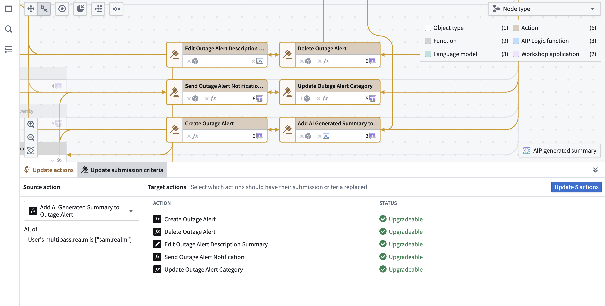
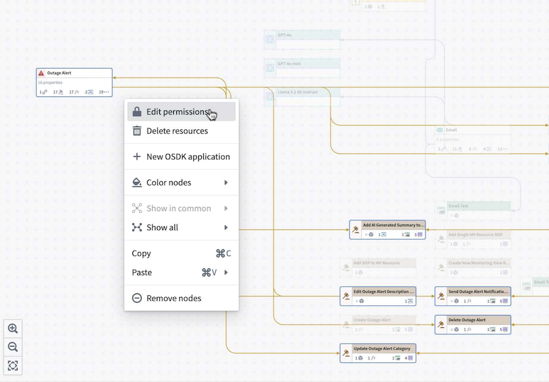
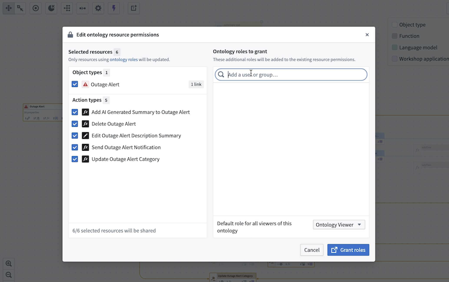
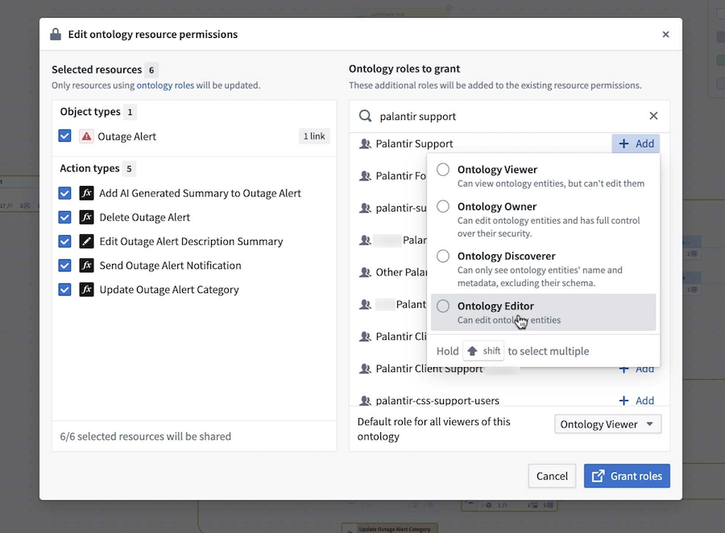
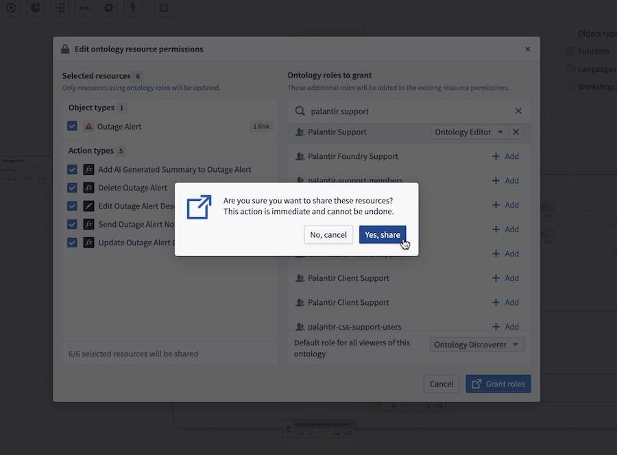
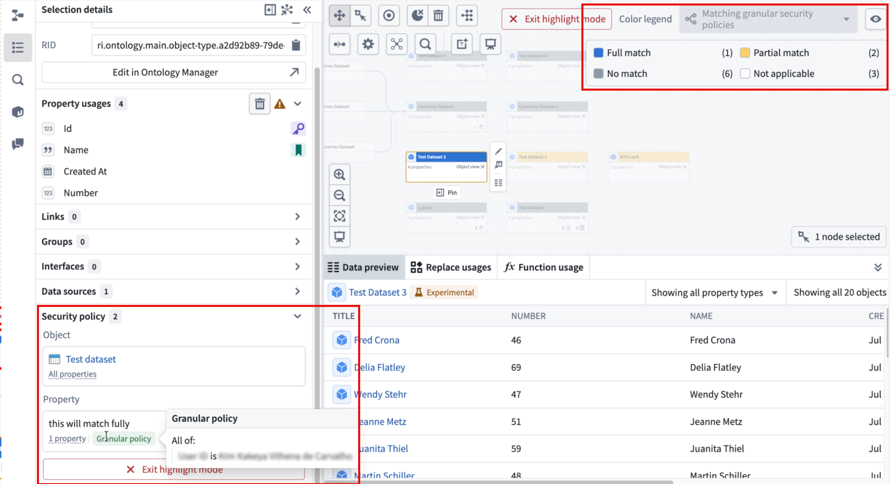

Workflow Lineage includes tools to help you understand and manage the security policies and submission criteria in your workflow.
The color legend in Workflow Lineage shows both Ontology permissions and Resource permissions.

There are two types of Ontology permissions:
Resource permissions show a breakdown for that particular user: whether they are an owner, viewer, editor, discoverer, or have no access to the resource itself.
To check the access permissions of a specific user, enter their username into the View as dropdown menu for a preview.
When nodes fail to load, select Remove failed nodes in the toolbar to remove them from the graph.
If you want to understand why someone cannot submit an action, use Debug permissions within the Ontology permissions color mode.

In the example above, the user can view the action type but does not satisfy the submission criteria.
You can view the submission criteria for a selected action, and highlight all other actions on the graph that match those criteria.
To do this:

After seeing the highlighted matching submission criteria, you can also bulk update action submission criteria to match the submission criteria of a source action. From the Workflow Lineage graph, select the actions you wish to update. Then, navigate to Update submission criteria from the bottom panel.

On the left side of the panel, select the source action with submission criteria that you want applied to the other actions. The submission criteria of the source action can be viewed under the selected source action.
When completed, select the blue Update x actions button where x is the number of actions that will be updated. You can choose how to apply the changes:
You can also bulk edit ontology role permissions on objects and actions by following the steps below:

This will bring you to the Edit ontology resource permissions window, displaying the selected resources.


Confirm the action by selecting Grant roles in the bottom right. A dialog will appear with the prompt, Are you sure you want to share these resources?.
Select Yes, share to proceed. Note that this action is immediate and cannot be undone.

You can view an object's security policies, as well as see all other objects that match or partially match those policies.

To see which objects on your graph fully or partially match your selected object's security policy go to the Security policy section in the Selection details side panel.